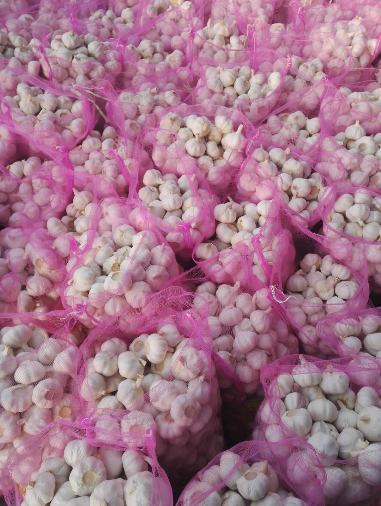

How to Import Garlic from China: Complete Step-by-Step Guide
A comprehensive 7-step guide covering supplier verification, price negotiation, payment terms, quality inspection, container loading, customs documentation, and delivery for garlic importers worldwide.
Published: July 14, 2026 | Reading time: 12 min
Quick Answer: Importing garlic from China involves 7 key steps: find a reliable supplier, request quotes and negotiate Incoterms, confirm order and payment terms, arrange production and quality inspection, load the container, handle customs clearance, and receive the goods. The standard MOQ is 1 x 40HQ Reefer Container (28MT), and the full process takes 3-7 weeks depending on destination.
China is the world's largest garlic producer, accounting for over 60% of global output. Shandong Province alone produces the majority of China's export-grade garlic, thanks to its ideal climate, rich soil, and mature cold-chain infrastructure. For importers, buying garlic directly from a Shandong-based exporter like ExCrop eliminates middlemen, reduces costs, and ensures product traceability from farm to container.
This guide walks you through every step of the garlic import process, from finding a supplier to receiving goods at your warehouse. Whether you are a first-time importer or an experienced trader looking to optimize your supply chain, this guide will help you navigate the process efficiently.
Step 1: Find a Reliable Garlic Supplier in China
The single most important decision in the garlic import process is choosing the right supplier. A reliable supplier ensures consistent quality, competitive pricing, proper documentation, and on-time delivery. A poor supplier choice can lead to quality disputes, shipment delays, and financial losses.
Supplier Verification Checklist
Business License: Verify the supplier has a valid Chinese business license with agricultural product export scope. Request a copy and cross-check with the local commerce bureau.
Export Qualifications: The supplier must have Customs AEO registration and the ability to obtain phytosanitary certificates from China Customs.
Quality Certifications: Look for ISO 22000, HACCP, or Global GAP certification. These indicate the supplier follows international food safety management systems.
Cold Storage Capacity: Garlic is harvested once a year (June) but sold year-round. A supplier with large cold storage facilities (5,000+ MT) can guarantee consistent supply and stable pricing even during off-season.
Processing Facility: Visit or request photos of the supplier's processing plant — sorting lines, packing areas, and cold storage. A professional facility is a strong indicator of quality control.
Export Track Record: Ask which countries the supplier currently exports to and request references from existing customers. A supplier exporting to 50+ countries has proven logistics capability.
ExCrop Profile: Heneng International Trade Group (Shandong) Co., Ltd. is based in Shandong, China. We are ISO and HACCP certified, operate large cold storage facilities, and export to 50+ countries across Africa, the Middle East, Southeast Asia, Europe, and the Americas. Contact us at contact@excrop.com for supplier verification documents.
Step 2: Request Quotes and Negotiate Terms
Once you have identified a supplier, request a formal quotation. A professional garlic quote should include: product variety (Normal White or Pure White), size specification (4.5cm-6.5cm+), packaging type, quantity, Incoterms (FOB/CIF/CNF), unit price, total price, loading port, and estimated shipment date.
Incoterms Comparison for Garlic Import
Incoterm
Supplier Handles
Buyer Handles
Best For
FOB Qingdao
Production, packing, loading, export clearance, delivery to vessel at Qingdao Port
Ocean freight, insurance, import clearance, inland transport
Buyers with own freight forwarder
CIF Destination
Everything in FOB + ocean freight + insurance to destination port
Import clearance, duties, inland transport
First-time importers, convenience
CNF Destination
Everything in FOB + ocean freight (no insurance)
Insurance, import clearance, duties, inland transport
Buyers who prefer to arrange own insurance
For first-time importers, CIF terms are recommended because the supplier handles shipping arrangements and insurance, reducing your logistics burden. As you gain experience and build relationships with freight forwarders, switching to FOB Qingdao can save $200-500 per container by negotiating your own freight rates.
Step 3: Confirm Order and Payment Terms
After agreeing on price and Incoterms, sign a formal Sales Contract (or Proforma Invoice) that specifies all terms in writing. This document serves as the legal basis for the transaction and is required by banks for payment processing.
Common Payment Methods
Method
Structure
Typical Use
T/T (Telegraphic Transfer)
30% deposit with order, 70% balance against B/L copy
Most common, trusted relationships
L/C (Letter of Credit)
Irrevocable L/C at sight, 100% covered
Large orders ($50,000+), new relationships
T/T (Alternative)
30% advance, 70% after loading and photos
Established relationships, repeat orders
The 30% T/T deposit + 70% against B/L copy structure is the industry standard for garlic trade. The deposit allows the supplier to purchase raw materials and begin production, while the balance payment after receiving the Bill of Lading copy ensures the buyer has proof that the goods have been shipped before releasing final payment.
Step 4: Production and Quality Inspection
After receiving the deposit, the supplier begins production: sourcing garlic from cold storage, sorting by size, packing into mesh bags or cartons, and pre-cooling the packed garlic to -2°C to -3°C. This process typically takes 5-7 days for a single 40HQ container.
Quality Inspection Options
Supplier Self-Inspection: The supplier's own QC team inspects and provides a quality report with photos. Included free of charge.
SGS Inspection: Independent third-party inspection by SGS, the world's leading inspection company. Verifies size grading, moisture content (≤7%), sprout rate (≤1%), root length (≤1cm), and visual quality. Cost: $300-500 per container.
BV (Bureau Veritas) Inspection: Similar to SGS, provides independent quality verification with internationally recognized certification.
Buyer On-Site Inspection: The buyer or their agent visits the supplier's facility to inspect in person. Most thorough but requires travel time and cost.
Recommendation: For first-time orders, always book SGS or BV inspection. The $300-500 cost is minimal compared to the value of a 28MT container ($20,000-30,000) and provides peace of mind that the garlic meets your specifications before it leaves China.
Quality Standards to Verify
Size conformity: Bulbs match the ordered diameter specification (e.g., 5.5cm means all bulbs ≥5.5cm)
Moisture content: ≤7% (prevents mold during transit)
Sprout rate: ≤1% (sprouted garlic has reduced shelf life and market value)
Skin coverage: ≥90% for Pure White, ≥80% for Normal White
No mold, rot, or pest damage
Foreign matter: None (soil, stones, plant debris)
Step 5: Container Loading and Shipping
After quality inspection passes, the garlic is loaded into a 40HQ reefer container at the supplier's facility or at Qingdao Port. The container is pre-cooled to -2°C to -3°C, loaded with the garlic, sealed, and transported to Qingdao Port for vessel loading.
The loading process should be documented with photos at each stage: empty container condition, pre-cooling temperature display, loading progress (25%, 50%, 75%, 100%), final seal number, and container number. Request these photos from your supplier as proof of proper loading.

Transit Times from Qingdao Port
Destination Region
Key Ports
Transit Time
Southeast Asia
Singapore, Manila, Bangkok
8-15 days
Middle East
Jebel Ali, Jeddah, Dammam
18-25 days
South Asia
Chattogram, Mumbai, Karachi
15-22 days
Africa
Mombasa, Durban, Lagos
25-35 days
Europe
Rotterdam, Hamburg, Antwerp
30-38 days
South America
Callao, Santos, Buenos Aires
35-42 days
Step 6: Customs Clearance and Documentation
Upon vessel departure, the supplier sends you the shipping documents. You need these to clear customs at the destination port. Work with a licensed customs broker in your country to handle the import clearance process.
Required Document Checklist
Document
Issued By
Purpose
Commercial Invoice
Supplier
Product description, HS code, value, terms
Packing List
Supplier
Carton/bag count, weight, dimensions
Bill of Lading (B/L)
Shipping Line
Title document, proof of shipment
Phytosanitary Certificate
China Customs
Confirms product is free from quarantine pests
Fumigation Certificate
Licensed Fumigator
Confirms methyl bromide or heat treatment
Certificate of Origin (CO)
CCPIT / Customs
Enables preferential tariff rates under FTA
The Certificate of Origin is particularly important if your country has a Free Trade Agreement (FTA) with China. For example, ASEAN countries can enjoy reduced or zero tariff rates on garlic imports with a valid CO Form E. Check with your customs broker whether an FTA applies to your shipment.
Step 7: Receive Goods and Post-Delivery
After customs clearance, arrange inland transport from the port to your warehouse. Upon arrival, inspect the goods immediately:
Check container temperature log (reefer units record temperature throughout the voyage)
Verify carton/bag count matches the packing list
Random sample 5-10 bags/cartons for quality check (size, moisture, appearance)
Photograph any damage or quality issues immediately for insurance claims
Transfer garlic to cold storage at 0°C to -2°C as soon as possible
Pro Tip: Keep the reefer container plugged in at your facility until you are ready to unload. The container can maintain -2°C to -3°C for several days while plugged into a power supply, giving you time to arrange cold storage space.
Frequently Asked Questions
What documents do I need to import garlic from China?
You need a Commercial Invoice, Packing List, Bill of Lading (B/L), Phytosanitary Certificate issued by China Customs, Fumigation Certificate, and Certificate of Origin (CO). Some countries also require a health certificate or specific import permits. Your supplier should provide all export documents, while you handle the import permit and customs declaration on your end.
What is the minimum order quantity for importing garlic from China?
The standard MOQ at ExCrop is 1 x 40HQ Reefer Container (28MT). This is the industry standard for garlic export from China. Smaller trial orders may be possible with LCL (less than container load) shipping, but per-unit costs will be significantly higher due to fixed handling and documentation fees.
What are the most common payment terms for garlic imports from China?
The most common payment methods are T/T (Telegraphic Transfer) with 30% deposit upfront and 70% balance against B/L copy, and L/C (Letter of Credit) at sight for orders exceeding $50,000. For established relationships, some suppliers accept T/T 30% advance and 70% after loading. Always negotiate terms before confirming the order.
How long does it take to import garlic from China?
From order confirmation to delivery at destination port: 5-7 days for production and quality inspection, 1-2 days for container loading and documentation, plus 8-40 days for ocean freight depending on destination (SEA: 8-15 days, Middle East: 18-25 days, Africa: 25-35 days, South America: 30-40 days). Total lead time is typically 3-7 weeks.
Do I need SGS or BV inspection for garlic imports?
SGS or BV inspection is not legally required but is strongly recommended for first-time buyers or large orders. A third-party inspection verifies garlic quality (size, moisture, appearance, sprouting) before loading and provides an independent quality report. The cost is typically $300-500 per container and is borne by the buyer.
Ready to Start Importing Garlic?
ExCrop provides end-to-end garlic export services from Shandong, China. From quality inspection to container loading and documentation, we handle it all.